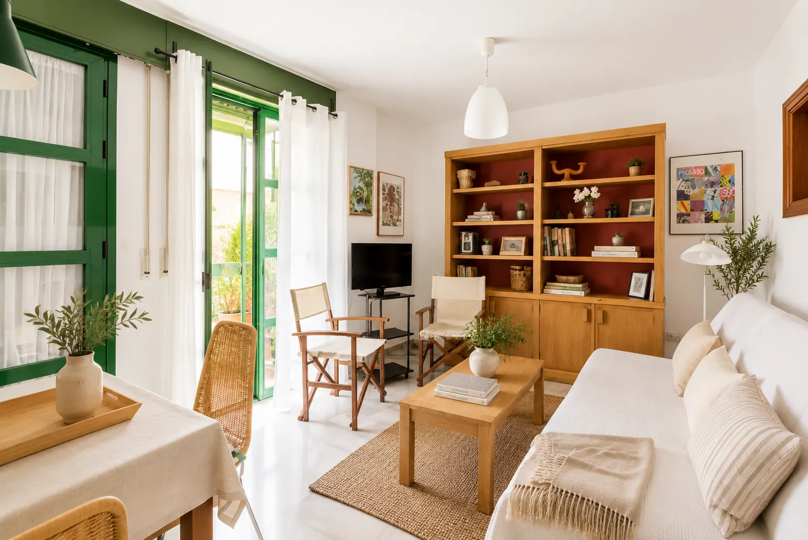
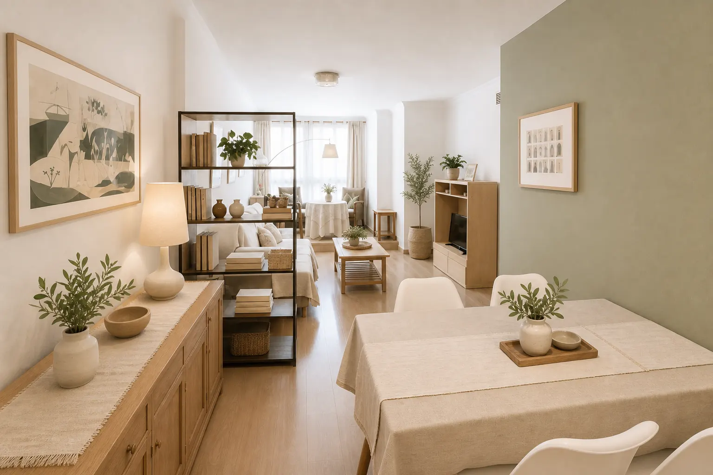

Málaga · Marbella
Asesoramiento inmobiliario
en Málaga y Marbella.
Compra, venta e inversión con atención personal. Propiedades seleccionadas, información clara y acompañamiento directo para propietarios y compradores.
Descubrir la selección↓Selección prime · Málaga
Descubra nuestra selección en Málaga.
Descubre cada vivienda a través de sus fotografías, características y documentación, y solicita una visita personal.

Apartamento en el Centro Histórico
Panaderos 10

Vivienda en La Malagueta
Fernando Camino 15
Guías para compradores
Conozca la zona antes de elegir.
Consejos para revisar la vivienda, el edificio y su entorno durante una visita.
Jaime Sureda
Jaime Sureda.
Economista y asesor inmobiliario.
Atención personal a propietarios y compradores en Málaga y Marbella. Cada propiedad se estudia y presenta con información clara, fotografías y documentación disponible bajo solicitud.
Acompañamiento en la valoración, preparación y comercialización de viviendas, coordinación de visitas y negociación. Para compradores e inversores, una conversación directa sobre sus objetivos y las oportunidades que desean estudiar.
Conocer mi trayectoria profesional →
Hablar con Jaime→Contacto directo
¿Hablamos de la próxima propiedad?
Al contactar, sus datos se usarán para atender la consulta. Más información sobre privacidad.